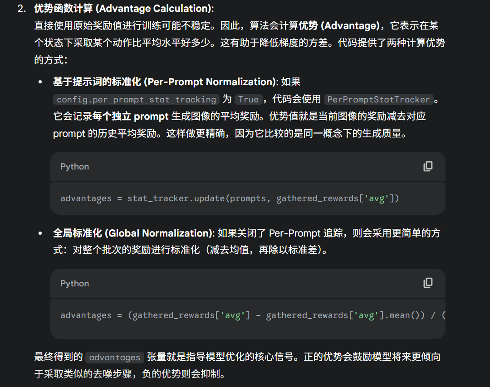

RL Basic
这是在准备推免的时候形成的RL笔记，比较混乱
已知Bellman公式之后，如何进行Policy优化，我们已经知道了Bellman Equation是对于一个Policy下的状态的优势公式
求解bellman function，我们知道了state value，知道state value之后我们可以计算action value，知道action value我们就能找到更优策略，然更新一遍之后继续计算Bellman function，如此循环
但是在优化中有一个过程
- 一个新的策略，是在所有state都超过原先策略，还是只在部分
- 这个更优策略唯一吗
- 如何去获取这个更优策略
- 什么是Model based和Model free
- GAE是什么
- GAE是一种讲MC方案和TD方案结合起来的做法，这两个方案都是为了计算Advantage
- MC方案即用实际的未来总回报减去当前状态价值
- TD方案即用即时奖励加上下一个状态的价值减去当前状态价值
- GAE就是讲两个方案加权，引入一个超参数
- LLM+RL可以看看Search R1的代码，Diffusion+RL就看FlowGRPO
1. Verl
2. 算法
2.1. Vision GRPO
https://github.com/Unakar/Logic-RL
两个版本GRPO
先是Rollout
1
2
3
4
5
6
7
8
9
10
11
12
13
14
15
16
17
18
19
20
21 | # ... 在 main 函数的 epoch 循环内 ...
# 使用修改后的 pipeline 进行采样
images, latents, sde_latents, log_probs, kls = pipeline_with_logprob_perstep(
pipeline,
# ... 其他参数 ...
)
# ...
# 将采集到的信息存入 samples 列表
samples.append(
{
# ... 其他元数据 ...
"latents": latents[
:, :-1
], # 每个 entry 是 timestep t 之前的 latent (状态 x_t)
"next_latents": sde_latents, # 下一步的 latent (状态 x_{t-1})
"log_probs": log_probs, # 从 x_t 到 x_{t-1} 的对数概率
"rewards": rewards, # 尚未计算的奖励 future 对象
}
)
|
然后进行Advantage计算，其中的Reward来自于Benchmark，在这里计算Advantage的时候出现了两种算均值的方案，应该一种是flowGRPO的一种是我们用的

随后计算Loss的范式和文本的是一致的，同样有重要性采样，先取一遍老版本的概率
| # compute_log_prob 函数计算当前策略的对数概率
prev_sample, log_prob, prev_sample_mean, std_dev_t = compute_log_prob(transformer, pipeline, sample, j, embeds, pooled_embeds, config)
|
然后计算ratio
| # sample["log_probs"][:, j] 是采样时记录的旧对数概率
ratio = torch.exp(log_prob - sample["log_probs"][:, j])
|
然后是Clip Loss和KL loss
1
2
3
4
5
6
7
8
9
10
11
12
13
14
15
16
17
18 | # advantages 乘以 ratio
unclipped_loss = - 2.25 * std_dev_t * advantages * ratio
# advantages 乘以裁剪后的 ratio
clipped_loss = - 2.25 * std_dev_t * advantages * torch.clamp(
ratio,
1.0 - config.train.clip_range,
1.0 + config.train.clip_range,
)
# 取两者中的最大值（因为是负数，所以是惩罚更大的那个）
policy_loss = torch.mean(torch.maximum(unclipped_loss, clipped_loss))
if config.train.beta > 0:
# ... 计算 KL loss ...
loss = policy_loss + config.train.beta * kl_loss
else:
loss = policy_loss
|
2.2. Search GPRO
每个Prompt生成5个response
首先我们会获得新的Policy的log probability
| with torch.no_grad():
output = self.actor_rollout_wg.compute_log_prob(final_gen_batch_output)
final_gen_batch_output = final_gen_batch_output.union(output)
|
并且我们会获得老的Policy的log probability
| if self.use_reference_policy:
# compute reference log_prob
with _timer('ref', timing_raw):
ref_log_prob = self.ref_policy_wg.compute_ref_log_prob(batch)
batch = batch.union(ref_log_prob)
|
GRPO 的 advantage 计算
1
2
3
4
5
6
7
8
9
10
11
12
13
14
15
16
17
18
19
20
21
22
23
24
25
26
27
28
29
30
31
32
33
34
35
36
37
38
39
40
41
42
43
44
45 | def compute_grpo_outcome_advantage(token_level_rewards: torch.Tensor,
eos_mask: torch.Tensor,
index: torch.Tensor,
epsilon: float = 1e-6):
"""
Compute advantage for GRPO, operating only on Outcome reward
(with only one scalar reward for each response).
Args:
token_level_rewards: `(torch.Tensor)`
shape: (bs, response_length)
eos_mask: `(torch.Tensor)`
shape: (bs, response_length)
Returns:
advantages: `(torch.Tensor)`
shape: (bs, response_length)
Returns: `(torch.Tensor)`
shape: (bs, response_length)
"""
response_length = token_level_rewards.shape[-1]
non_zero_mask = (token_level_rewards != 0)
scores = (token_level_rewards * non_zero_mask).sum(dim=-1)
id2score = defaultdict(list)
id2mean = {}
id2std = {}
with torch.no_grad():
bsz = scores.shape[0]
for i in range(bsz):
id2score[index[i]].append(scores[i])
for idx in id2score:
if len(id2score[idx]) == 1:
id2mean[idx] = torch.tensor(0.0)
id2std[idx] = torch.tensor(1.0)
elif len(id2score[idx]) > 1:
id2mean[idx] = torch.mean(torch.tensor(id2score[idx]))
id2std[idx] = torch.std(torch.tensor([id2score[idx]]))
else:
raise ValueError(f"no score in prompt index: {idx}")
for i in range(bsz):
scores[i] = (scores[i] - id2mean[index[i]]) / (id2std[index[i]] + epsilon)
scores = scores.unsqueeze(-1).tile([1, response_length]) * eos_mask
return scores, scores
|
随后引入KL loss
| if not self.config.actor_rollout_ref.actor.use_kl_loss:
batch, kl_metrics = apply_kl_penalty(batch,
kl_ctrl=self.kl_ctrl,
kl_penalty=self.config.algorithm.kl_penalty)
metrics.update(kl_metrics)
else:
batch.batch['token_level_rewards'] = batch.batch['token_level_scores']
|
然后计算Policy Loss
在下面的函数中还包括了重要性采样的部分，我们的Policy Loss 如此结算pg_losses = -advantages * ratio ，ratio和advantage本质都是向量，只是在最后他们会算均值形成一个Loss
我们要把现在的输出放到老的Policy中进行一遍计算，获得old policy probability

1
2
3
4
5
6
7
8
9
10
11
12
13
14
15
16
17
18
19
20
21
22
23
24
25
26
27
28
29
30
31
32 | def compute_policy_loss(old_log_prob, log_prob, advantages, eos_mask, cliprange):
"""Adapted from https://github.com/huggingface/trl/blob/main/trl/trainer/ppo_trainer.py#L1122
Args:
old_log_prob: `(torch.Tensor)`
shape: (bs, response_length)
log_prob: `(torch.Tensor)`
shape: (bs, response_length)
advantages: `(torch.Tensor)`
shape: (bs, response_length)
eos_mask: `(torch.Tensor)`
shape: (bs, response_length)
cliprange: (float)
The clip range used in PPO. See https://arxiv.org/abs/1707.06347
Returns:
pg_loss: `a scalar torch.Tensor`
policy gradient loss computed via PPO
pg_clipfrac: (float)
a float number indicating the fraction of policy gradient loss being clipped
"""
negative_approx_kl = log_prob - old_log_prob
ratio = torch.exp(negative_approx_kl)
ppo_kl = verl_F.masked_mean(-negative_approx_kl, eos_mask)
pg_losses = -advantages * ratio
pg_losses2 = -advantages * torch.clamp(ratio, 1.0 - cliprange, 1.0 + cliprange)
pg_loss = verl_F.masked_mean(torch.max(pg_losses, pg_losses2), eos_mask)
pg_clipfrac = verl_F.masked_mean(torch.gt(pg_losses2, pg_losses).float(), eos_mask)
return pg_loss, pg_clipfrac, ppo_kl
|
最后整合各项Loss
- Policy Loss 为了最大化奖励而存在的Loss，这个Loss有三部分，新旧策略的比例乘以Advantage，再算Clip
- Entropy Loss 再Loss中减去熵损失，就是为了鼓励高熵操作，鼓励探索
- KL散度，和SFT模型算不确定度
1
2
3
4
5
6
7
8
9
10
11
12
13
14
15
16
17
18
19
20
21
22
23
24
25 | pg_loss, pg_clipfrac, ppo_kl = core_algos.compute_policy_loss(old_log_prob=old_log_prob,
log_prob=log_prob,
advantages=advantages,
eos_mask=response_mask,
cliprange=clip_ratio)
# compute entropy loss from entropy
entropy_loss = verl_F.masked_mean(entropy, response_mask)
# compute policy loss
policy_loss = pg_loss - entropy_loss * entropy_coeff
if self.config.use_kl_loss:
ref_log_prob = data['ref_log_prob']
# compute kl loss
kld = core_algos.kl_penalty(logprob=log_prob,
ref_logprob=ref_log_prob,
kl_penalty=self.config.kl_loss_type)
kl_loss = masked_mean(kld, response_mask)
policy_loss = policy_loss + kl_loss * self.config.kl_loss_coef
metrics['actor/kl_loss'] = kl_loss.detach().item()
metrics['actor/kl_coef'] = self.config.kl_loss_coef
loss = policy_loss / self.gradient_accumulation
loss.backward()
|
部分参数配置如下
1
2
3
4
5
6
7
8
9
10
11
12
13
14
15
16
17
18
19
20
21
22
23
24
25 | algorithm.adv_estimator=grpo \
actor_rollout_ref.model.path=$BASE_MODEL \
actor_rollout_ref.model.enable_gradient_checkpointing=true \
actor_rollout_ref.model.use_remove_padding=True \
actor_rollout_ref.actor.optim.lr=1e-6 \
actor_rollout_ref.actor.optim.lr_warmup_steps_ratio=0.285 \
actor_rollout_ref.actor.use_kl_loss=true \
actor_rollout_ref.actor.ppo_mini_batch_size=256 \
actor_rollout_ref.actor.ppo_micro_batch_size=64 \
actor_rollout_ref.actor.fsdp_config.param_offload=true \
actor_rollout_ref.actor.fsdp_config.grad_offload=true \
actor_rollout_ref.actor.fsdp_config.optimizer_offload=true \
actor_rollout_ref.rollout.log_prob_micro_batch_size=128 \
actor_rollout_ref.rollout.tensor_model_parallel_size=1 \
actor_rollout_ref.rollout.name=vllm \
actor_rollout_ref.rollout.gpu_memory_utilization=0.6 \
actor_rollout_ref.ref.log_prob_micro_batch_size=128 \
actor_rollout_ref.ref.fsdp_config.param_offload=True \
actor_rollout_ref.actor.kl_loss_coef=0.001 \
actor_rollout_ref.actor.kl_loss_type=low_var_kl \
algorithm.no_think_rl=false \
actor_rollout_ref.rollout.n_agent=5 \
actor_rollout_ref.rollout.temperature=1 \
actor_rollout_ref.actor.state_masking=true \
trainer.logger=['wandb'] \
|